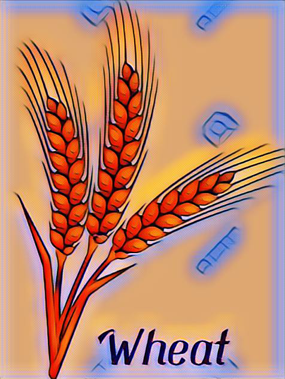
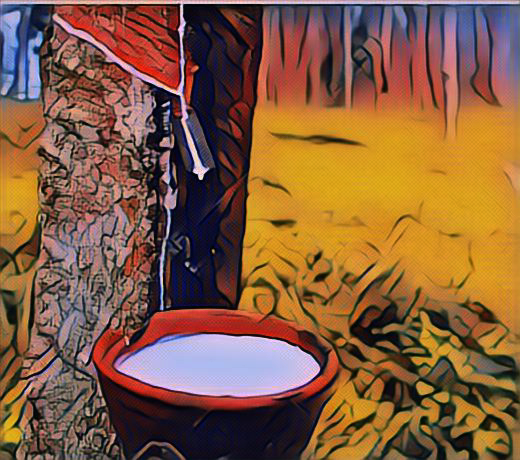

- High temperature and high humidty.
- Annual rainfall above 100cm.
- It is a karif crop.

- Cool temperature while growing and bright sunshine while harvesting.
- Annual rainfall of 50 to 70cm.
- It is a rabi crop.

- 21°C to 27°C temperature is required
- It is a karif crop.>

- Grows in tropical and sub tropical areas
- Temperature above 25°C
- Annual rainfall more than 200cm
- High temperature is required
- Light rainfall
- 210 frost-free days